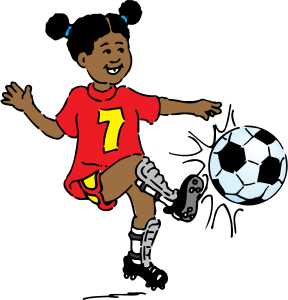

Let´s see how much do you know about sport!
1. What was the first name given to snowboarding?
2. You should always stretch before a run to prevent injury.
3. With which Buenos Aires team did Lionel Messi try out, even though the signing did not materialize?
